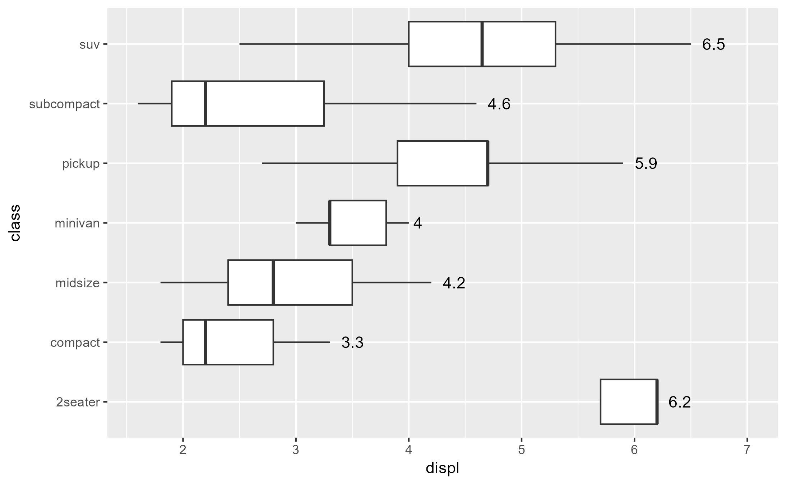

layer_before_stat(), layer_after_stat(), layer_before_geom(), and
layer_after_scale() are convenience functions that return a snapshot of
a layer's data in the internals. layer_is() is a helper function used by
these.
Usage
layer_before_stat(
plot,
i = 1L,
...,
error = FALSE,
verbose = rlang::is_interactive()
)
layer_after_stat(
plot,
i = 1L,
...,
error = FALSE,
verbose = rlang::is_interactive()
)
layer_before_geom(
plot,
i = 1L,
...,
error = FALSE,
verbose = rlang::is_interactive()
)
layer_after_scale(
plot,
i = 1L,
...,
error = FALSE,
verbose = rlang::is_interactive()
)
layer_is(x)Arguments
- plot
A ggplot object. If missing, defaults to
ggplot2::last_plot().- i
Index of the layer to inspect. Defaults to
1L.- ...
Unused.
- error
If
TRUE, returns the layer data early if available before the point of error.- verbose
If
TRUE, prints the corresponding ggtrace code and re-prints evaluation errors.- x
An integer or an expression.
Integer: A number for the nth layer
Expression: Evaluate for each call to the method, which exposes information about the current layer that the method is being called for. In technical terms,
layer_is()subsets calls to the method that are downstream of theby_layer()function in the ggplot internals.
If
xis an expression, the following variables are exposed:i: Scalar integer representing the nth layerdata: Data argument passed to the ggproto method, if available.layers: A list, equivalent to<ggplot>$layers.
Examples
library(ggplot2)
p1 <- ggplot(mpg, aes(displ, class)) +
geom_boxplot(outlier.shape = NA) +
geom_text(
aes(
label = after_stat(xmax),
x = stage(displ, after_stat = xmax)
),
stat = "boxplot", hjust = -0.5
)
p1

# Before Stat snapshot of first layer's data
layer_before_stat()
#> # A tibble: 234 × 4
#> x y PANEL group
#> <dbl> <mppd_dsc> <fct> <int>
#> 1 1.8 2 1 2
#> 2 1.8 2 1 2
#> 3 2 2 1 2
#> 4 2 2 1 2
#> 5 2.8 2 1 2
#> 6 2.8 2 1 2
#> 7 3.1 2 1 2
#> 8 1.8 2 1 2
#> 9 1.8 2 1 2
#> 10 2 2 1 2
#> # ℹ 224 more rows
# After Stat snapshot of first layer's data
layer_after_stat()
#> # A tibble: 7 × 14
#> xmin xlower xmiddle xupper xmax outliers notchupper notchlower y width
#> <dbl> <dbl> <dbl> <dbl> <dbl> <list> <dbl> <dbl> <dbl> <dbl>
#> 1 5.7 5.7 6.2 6.2 6.2 <dbl [1]> 6.55 5.85 1 0.75
#> 2 1.8 2 2.2 2.8 3.3 <dbl [0]> 2.38 2.02 2 0.75
#> 3 1.8 2.4 2.8 3.5 4.2 <dbl [1]> 3.07 2.53 3 0.75
#> 4 3 3.3 3.3 3.8 4 <dbl [1]> 3.54 3.06 4 0.75
#> 5 2.7 3.9 4.7 4.7 5.9 <dbl [0]> 4.92 4.48 5 0.75
#> 6 1.6 1.9 2.2 3.25 4.6 <dbl [1]> 2.56 1.84 6 0.75
#> 7 2.5 4 4.65 5.3 6.5 <dbl [0]> 4.91 4.39 7 0.75
#> # ℹ 4 more variables: relvarwidth <dbl>, flipped_aes <lgl>, PANEL <fct>,
#> # group <int>
# First and second layer's data are identical for those two stages
identical(layer_before_stat(), layer_before_stat(i = 2))
#> [1] TRUE
identical(layer_after_stat(), layer_after_stat(i = 2))
#> [1] TRUE
# `after_stat()` mappings add new columns to the second layer's data
# by the time the geom receives the data in the Before Geom stage
library(dplyr)
layer_before_geom(i = 2)
#> # A tibble: 7 × 16
#> x label xmin xlower xmiddle xupper xmax outliers notchupper notchlower
#> <dbl> <dbl> <dbl> <dbl> <dbl> <dbl> <dbl> <list> <dbl> <dbl>
#> 1 6.2 6.2 5.7 5.7 6.2 6.2 6.2 <dbl [1]> 6.55 5.85
#> 2 3.3 3.3 1.8 2 2.2 2.8 3.3 <dbl [0]> 2.38 2.02
#> 3 4.2 4.2 1.8 2.4 2.8 3.5 4.2 <dbl [1]> 3.07 2.53
#> 4 4 4 3 3.3 3.3 3.8 4 <dbl [1]> 3.54 3.06
#> 5 5.9 5.9 2.7 3.9 4.7 4.7 5.9 <dbl [0]> 4.92 4.48
#> 6 4.6 4.6 1.6 1.9 2.2 3.25 4.6 <dbl [1]> 2.56 1.84
#> 7 6.5 6.5 2.5 4 4.65 5.3 6.5 <dbl [0]> 4.91 4.39
#> # ℹ 6 more variables: y <dbl>, width <dbl>, relvarwidth <dbl>,
#> # flipped_aes <lgl>, PANEL <fct>, group <int>
# After Scale data reflects `after_scale()` mappings
p2 <- ggplot(mpg, aes(as.factor(cyl), hwy, color = as.factor(cyl))) +
theme(legend.position = 0)
#> Warning: A numeric `legend.position` argument in `theme()` was deprecated in ggplot2
#> 3.5.0.
#> ℹ Please use the `legend.position.inside` argument of `theme()` instead.
p2a <- p2 +
geom_boxplot(aes(fill = as.factor(cyl)))
p2b <- p2 +
geom_boxplot(aes(fill = after_scale(alpha(color, .6))))
library(patchwork)
p2a + p2b
layer_after_scale(p2a, verbose = FALSE)$fill
#> [1] "#F8766D" "#7CAE00" "#00BFC4" "#C77CFF"
layer_after_scale(p2b, verbose = FALSE)$fill
#> [1] "#F8766D99" "#7CAE0099" "#00BFC499" "#C77CFF99"
alpha( layer_after_scale(p2a, verbose = FALSE)$fill, .6 )
#> [1] "#F8766D99" "#7CAE0099" "#00BFC499" "#C77CFF99"